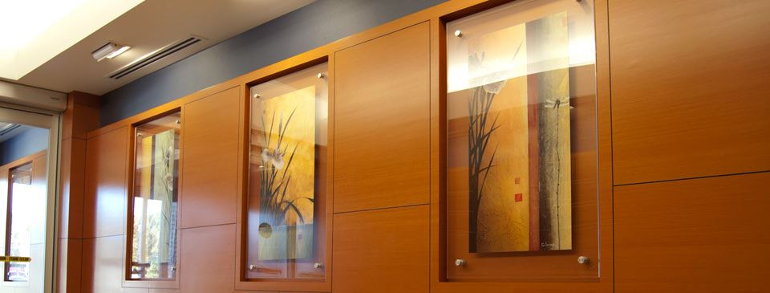

-
Welcome to Ocean Art With thousands of frame and mat samples to choose from, our trained staff will show you many quality framing options. To see more of our work and what we offer check out our Flickr page here.
-
Welcome to Ocean Art Feel confident that your framer helps protect the environment by using non toxic stains/dyes and harvesting frames from sustainable forests. To see more of our work and what we offer check out our Flickr page here.
-

Welcome to Ocean Art To give you the best product possible, Ocean Art uses the latest technology in framing equipment. To see more of our work and what we offer check out our Flickr page here.
-

Welcome to Ocean Art No job is too big or too small at Ocean Art. From your vacation snapshots to an artwork package for your office building.....we've got you covered. To see more of our work and what we offer check out our Flickr page here.
-
Welcome to Ocean Art Local Artists love Ocean Art. By displaying prints and originals in our gallery, we help local artists get the exposure they deserve. To see more of our work and what we offer check out our Flickr page here.
We Care About Your Work
Our experienced and trained staff use the highest quality Conservation and Environmentally Friendly materials to ensure your items will be preserved for many years of viewing pleasure.
We Care About Quality
Ocean Art utilizes state of the art equipment and framing products from the industries top manufacturers. You should expect the best. You'll get it with Ocean Art.
We Love Local Work
Many local artists have prints and originals displayed in our eclectic gallery. Ocean Art participates in local art shows and has developed an extensive local artist network.